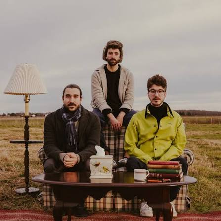

Music Is More Than Just Sound
For me, music has never been just about listening to songs. It is about feelings, memories, and moments that are difficult to explain in words. Sometimes, a song can make an ordinary day feel special. Sometimes, it can make me smile when I am sad or help me feel understood when I cannot explain what is going on in my mind.
As I grew up, English music slowly became an important part of my life. I started discovering different bands and artists, and every one of them gave me something different to enjoy.

The Artists Who Made My Life Beautiful
Some artists have become much more than just names on my playlist. Their music has been with me through different stages of my life, and listening to their songs brings back so many memories.
My Favourite Bands
- AJR
- Twenty One Pilots
- Coldplay
I love how these bands have their own styles. Their songs can be energetic, emotional, strange in the best possible way, or simply beautiful. There is always something new to discover when I listen to them.
Other Artists I Love
- JVKE
- NF
- Lewis Capaldi
- Jon Bellion
Each of these artists brings a different feeling to my playlist. Some songs make me happy, some make me think, and some stay in my head for days. That is what makes discovering music so special.
Jon Bellion: Something Truly Special
If I had to talk about one artist who stands out the most to me, it would be Jon Bellion. His music feels out of this world. I love the creativity in his songs, the way he mixes different sounds, and the emotions behind his music.
What makes him even more special to me is that I admire him as a person too. There is something inspiring about an artist whose work makes you appreciate not only the music but also the person behind it.
You can explore his music here: Jon Bellion's Official Website
What Music Has Given Me
Looking back, I feel that music has made my childhood and teenage years more lovely and beautiful. Certain songs remind me of specific times, feelings, and little moments that I might otherwise forget.
Here are a few reasons why music matters so much to me:
- It makes ordinary moments memorable.
- It helps me express feelings.
- It gives me comfort on difficult days.
- It introduces me to new ideas and sounds.
- It connects me to memories from growing up.
| Artist or Band | What I Love |
|---|---|
| AJR | Creative and unique sounds |
| Twenty One Pilots | Meaningful and emotional music |
| Coldplay | Beautiful melodies and atmosphere |
| JVKE | Catchy melodies and emotions |
| NF | Honest and powerful lyrics |
| Lewis Capaldi | Emotional singing |
| Jon Bellion | Creativity and musical imagination |
Discover More Music
Music is something everyone can experience differently. If you want to discover new songs and artists, you can explore Spotify or learn more about music through this introduction to music .
Conclusion: A Part of Who I Am
When I think about my childhood and teenage years, music is one of the things that makes those memories feel special. AJR, Twenty One Pilots, Coldplay, JVKE, NF, Lewis Capaldi, and especially Jon Bellion have all added something beautiful to my life.
I do not know how my music taste will change in the future, but I know that these artists will always remind me of the person I was while growing up. And that is why music means so much to me. It is not just something I hear. It is something I feel, remember, and carry with me.